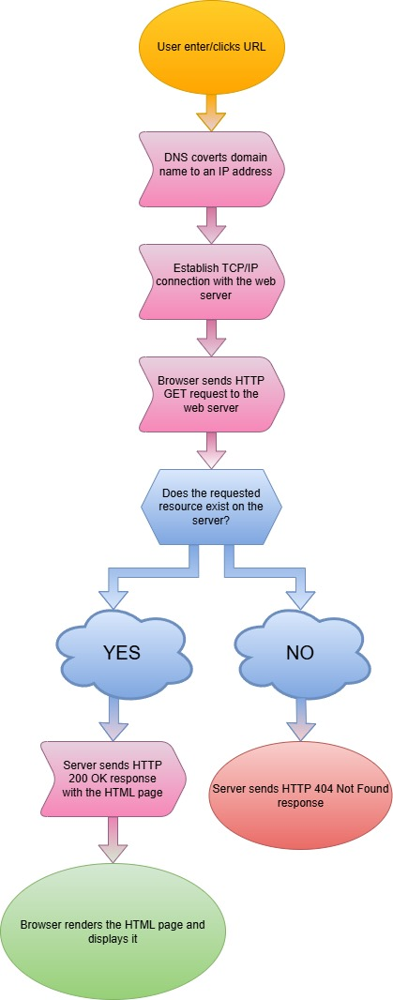

The process of getting access to a simple HTML page begins with the user entering or clicking on a URL (Uniform Resource Locator) on a web browser [1], [2], [3]. The computer, also known as the client, is requesting this resource from the web server. The requested URL is an IP address that exists (should exist) and belongs to the server. The browser needs to convert the human-readable domain name from the URL into an IP address using the DNS server (Domain Name System). After the IP address is obtained, the client must establish a TCP/IP connection with the web server. TCP protocol (Transmission Control Protocol) is one of the main protocols, it is a communication protocol that enables message exchange over a network. IP (Internet Protocol) is the address system of the Internet, and it is fundamental for delivering information from the source to the target. Together, TCP and IP create an Internet Protocol Suite – TCP/IP – where IP protocol deals with routing and addressing the packets of information, while the TCP protocol ensures delivery.
With a secure TCP/IP connection, the client sends an HTTP GET request to the server.
The request will have two lines.
The first line will contain:
The second line will contain the domain name to which the request is being sent - the address of the server.
For example:
GET /index.html HTTP/1.1
Host: www.index_example.com
There may be additional lines in the request depending on the data that the
web browser chooses to send.
Such lines would be:
If an HTTPS protocol is being used, the browser will first initiate a secure connection in order to encrypt the communication before sending an HTTP request.
After the server receives the HTTP request from the client, it first checks if the
resource exists. If the server has found the resource, it then sends a positive response.
The response will consist of the header and the requested content.
The header will have:
For example:
HTTP/1.1 200 OK
Content-Type: text/html
The header might also contain other information such as: content-type, content-length, date, and connection. The header is then followed by the requested content.
Not every server’s response will be positive, and the HTTP status code will be the one informing the client about it. For example, if the server is not able to find the requested resource, it will respond with a header that has an HTTP status code: 404 NOT FOUND. The header will then, of course, not be followed by the requested content.
For example:
HTTP/1.1 404 NOT FOUND
After the client receives a positive response, it renders the requested content - in this case, the HTML page - and displays it on the screen [1], [2], [3]!
